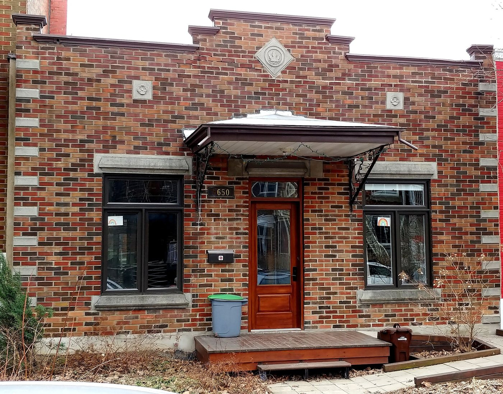
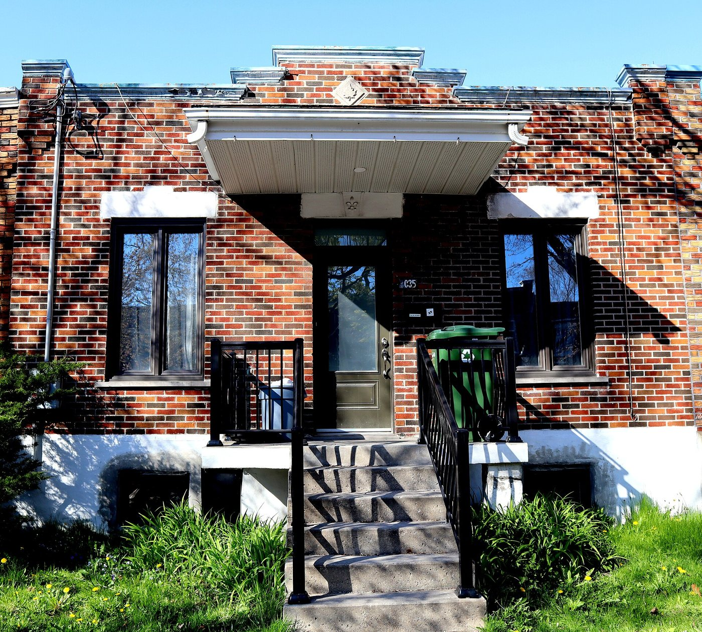

Maison shoebox Maison de type « shoebox »

Guerinf, « Maisons shoebox dans Rosemont (25) », 20 November 2019, CC BY-SA 4.0 — https://commons.wikimedia.org/wiki/File:Maisons_shoebox_dans_Rosemont_(25).jpg (licence https://creativecommons.org/licenses/by-sa/4.0). Licence template on the file page read and verified via the Commons API: {{self|cc-by-sa-4.0}}, own work.

Guerinf, « Maison shoebox à Montréal dans Rosemont 05 », CC BY-SA 4.0 — https://commons.wikimedia.org/wiki/File:Maison_shoebox_%C3%A0_Montr%C3%A9al_dans_Rosemont_05.jpg (licence https://creativecommons.org/licenses/by-sa/4.0). Licence verified via the Commons API.

Guerinf, « Maisons shoebox dans Rosemont (20) », 20 November 2019, CC BY-SA 4.0 — https://commons.wikimedia.org/wiki/File:Maisons_shoebox_dans_Rosemont_(20).jpg (licence https://creativecommons.org/licenses/by-sa/4.0). Licence verified via the Commons API.
A one-storey brick box, its short end to the street, a door in the middle with a window on each side, a cornice or parapet across the top, and a flat roof that was flat on purpose — so that the owner could add a floor when he had the money. Five hundred and sixty-one survive in Rosemont–La Petite-Patrie, more than in any other borough, and since 2019 each of them is named at its own address in an annexe to the zoning by-law and carries an architectural value of 1, 2 or 3. It is the only house on this site that its occupants built themselves.
The Canadian Pacific opened the Angus Shops in 1904, and the promoters U.-H. Dandurand and Herbert Holt formed the Rosemont Land Improvement Company and subdivided the Crawford farm to the north of them. The cahier records what the 1907 Pinsoneault atlas shows: long blocks with lanes and lots all of one size, a single model. What let labourers onto those lots was not a mortgage but the promettant-acquéreur — a promise of sale from a land company needing only a few dollars down, which is the mechanism Guy Gaudreau documents for the first Rosemont and Villeray shoeboxes. A journalier could take a lot on those terms and build a small flat-roofed house on it with his own hands, out of whatever materials were available, and add to it later. Everything characteristic of the type follows from that: the small footprint, the perpendicular plan that wastes no street frontage, the plain brick front, and above all the flat roof, which is not a style but an unbuilt second storey.
| Tenure / plan | single-family |
|---|---|
| Storeys | 1 |
| Roof form | flat |
| Roof pitch | 0° |
| Window proportion | vertical |
| Principal cladding | clay-brick-red, clay-brick-beige-brown, wood-clapboard |
| Roofing | – |
| Garage | none |
| Lot width | – |
| Front setback | – |
| Side setback | – |
| Front yard green | – |
What Ville de Montréal says about this type
- « Il s'agit de bâtiments résidentiels urbains d'un seul étage, de plan rectangulaire implanté perpendiculairement à la rue, de dimensions réduites et couverts d'un toit plat pour permettre de futures expansions architecturales. »
- « L'appellation de ce type de maisons renvoie à leur volumétrie rectangulaire évoquant une boîte à chaussures. »
- « Les maisons de type « shoebox » ont fait leur apparition à Montréal au début du XXe siècle et ont connu diverses phases de construction jusqu'aux années 1960. »
- « Les premières générations sont souvent des constructions modestes réalisées à faible coût par leurs propriétaires à partir des matériaux disponibles. »
- By-law definition, 01-279 art. 5 : « maison shoebox » : bâtiment principal de 1 étage à toit plat identifié à la liste de l'annexe F intitulée « Maisons shoebox de l'arrondissement de Rosemont – La Petite-Patrie » ou tout autre bâtiment principal de 1 étage à toit plat occupé exclusivement par un usage résidentiel ».
- By-law definition, 01-279 art. 5 : « maison shoebox d'intérêt » : bâtiment principal de 1 étage à toit plat identifié à la liste de l'annexe F […] et ayant une valeur architecturale de 2 ou 3 ».
- « Avec l'essor de l'industrialisation et la construction de chemins de fer et de tramways, Montréal accueille de nombreux travailleurs issus de l'immigration et des régions. »
- « Les nouveaux moyens de transport ainsi que le développement du réseau routier offrent aux travailleurs l'occasion de pouvoir éloigner leur lieu de travail de leur milieu de vie. Au lieu de s'installer dans les secteurs surpeuplés proches des usines, ils achètent un lopin de terre à prix abordable en périphérie du centre-ville pour y construire leur maison et ainsi accéder à la propriété. »
- Cahier d'évaluation, 2004, already naming the threat by name : « la tendance est à la densification des quartiers, ce qui met en péril l'existence des petites maisons d'un seul étage qui témoignent d'un mode d'occupation du territoire en voie de disparition ».
- Rectangular plan set PERPENDICULAR to the street, so the narrow end faces the road and the building runs back into the lot.
- Small footprint on a narrow lot, generally in a row of contiguous or near-contiguous neighbours two and three storeys taller.
- 56 of the 561 are built at the back of the lot rather than at the street line, sometimes behind another house, sometimes reached down a side passage.
- 232 of the 561 stand next to another shoebox; the by-law treats adjacency as a value in itself and restrains the upper floor of an adjacent house accordingly.
- One storey. Flat roof. The flat roof is the point of the type, not a stylistic preference: it was built flat so that a floor could be added later when the owner could afford it.
- Minimum height set by by-law at 4 m and 1 storey (art. 11.1), so the form cannot be regulated out of existence from below.
- Maximum height where the insertion rules would otherwise cap the building at one storey, 9 m and 2 storeys (art. 26.1) — the by-law permits exactly the upward extension the type was designed for, and no more.
- On a value-3 or an adjacent shoebox, any façade plane above the ground floor must step back at least 1 m from the ground-floor façade, so an added storey reads as an addition rather than as a new front (art. 52.1).
- Door at the centre of the façade with two windows distributed symmetrically on either side of it.
- The upper part of the façade is finished by a couronnement — a cornice or a parapet — which for a maison shoebox d'intérêt is compulsory under art. 100.1 and which the art. 89 table lists as the type's dominant crowning treatment.
- 118 of the 561 carry the Annexe F mention « couronnement de qualité », which is a flag with its own legal consequence rather than a description; on a value-3 house any work must aim to restore that crown to its original form, and on a value-2 house to put it in value or reinterpret it in a contemporary way.
- Often a front galerie under a marquise.
- Very little else. The type carries no applied ornament programme; what distinguishes one from another is the brickwork and the couronnement.
- Two windows flanking the central door, symmetrically placed, on the short street-facing elevation.
- Proportion of the openings is one of the three criteria on which the borough graded every house, and PIIA fascicule 10 asks that it be preserved or that a modified façade be returned to its original composition.
- Where basement openings are altered, the fascicule asks that their depth be minimised.
- Façades generally in brick. The art. 89 table lists brick as the dominant facing for the maison shoebox d'intérêt.
- The first generations were built cheaply by their owners from whatever materials were to hand, so the earliest examples are the least consistent.
- Quality of the masonry is the second of the three grading criteria.
- « pour la plupart, la présence d'une porte située au centre de la façade et de deux fenêtres distribuées de façon symétrique de chaque côté de celle-ci »
- « des façades généralement en brique et possédant un couronnement (détail architectural décoratif qui orne la partie supérieure du bâtiment), tels une corniche ou un parapet »
- « souvent, une galerie en façade surplombée d'une marquise »
This borough publishes no per-type fiche, so the five columns are assembled from three documents of different kinds and the join is stated rather than hidden. Siting, massing and materials come from the Ville de Montréal dépliant's definition and from the dimensional articles of by-law 01-279 (11.1, 26.1, 52.1); articulation and openings come from the dépliant's list of caractéristiques architecturales, from the art. 89 table of dominant characteristics — where the maison shoebox d'intérêt is the row coded MS, with brick as parement and cornice or parapet as couronnement — and from PIIA fascicule 10. Two attributions matter. The dépliant is published by the ADJOINING borough of Villeray–Saint-Michel–Parc-Extension (2019, source credited to Isabelle Bouchard, M. Sc. A. conservation); its definition is the Ville's general one and is quoted as such, but its counts of 1,159 houses are VSP's and are not used here. And nothing in this record is a lot width or a setback measurement, because neither the dépliant nor the by-law states one for the type; the fields are left null rather than estimated from photographs. One further caveat, because it is a disagreement and not a gap: this record treats the shoebox as ONE type, spanning the early twentieth century to the 1960s, which is how Rosemont's by-law treats it — a single defined term, a single address list, a single fascicule. Villeray–Saint-Michel–Parc-Extension, next door, splits the same building stock into a « shoebox du début du 20e siècle » and a « shoebox du milieu du 20e siècle », and proposes calling the whole thing a « uniplex » — a single-family member of the plex family — instead. Two boroughs of one city, working from the same houses in the same years, disagree about whether this is one type or two and about what to call it. Neither reading is corrected into the other here.
- By value, which is the only classification with legal force here: 170 of value 1, 233 of value 2, 158 of value 3 (Annexe F).
- By couronnement: 118 of the 561 carry the Annexe F mention « couronnement de qualité », which triggers a preservation rule of its own.
- By siting: 505 stand on the street line like their neighbours; 56 — just under 10 % — are built « en fonds de lot », at the back of the lot, a survival of a way of occupying the lot that hygiene rules elsewhere in Montréal ended.
- By adjacency: 232 of the 561 stand next to another shoebox, which is what makes the type read as a street rather than as scattered curiosities.
- By generation: the borough treats the shoebox as one type. The adjoining borough of Villeray–Saint-Michel–Parc-Extension splits the same object in two — « shoebox du début du 20e siècle » (A/B/C) and « shoebox du milieu du 20e siècle » (A–E) — and proposes the alternative name « uniplex ». Two boroughs of one city disagree about whether this is one type or two.
- Objective, PIIA fascicule 10: preserve the principal volumetric and architectural characteristics of the maisons shoebox d'intérêt so that work does not compromise their symbolic value; and, for a shoebox, favour added volumes that stand out by their architectural quality.
- The addition must not swallow the house: « le corps principal devant tendre à demeurer plus imposant que l'agrandissement », and the ground floor should keep its original height.
- An added storey must be compatible in level with the neighbouring buildings, must maximise the area of its openings, and must have its own accentuated couronnement.
- Only usage categories H.1 to H.3 are permitted on a shoebox lot — one, two or three dwellings — and where the house is value 3, only H.1. The most interesting shoeboxes are therefore worth the least to a redeveloper.
- A demolition application is judged under the Règlement régissant la démolition d'immeubles (RCA-6), which carries evaluation criteria of its own; a moratorium on new applications ran from May 2018 until the by-law was in force.
- « Assurer la préservation des principales caractéristiques volumétriques et architecturales des maisons shoebox d'intérêt afin que les interventions ne compromettent pas leur valeur symbolique »
- « Pour une maison shoebox, favoriser des ajouts de volume qui se démarquent par leur qualité architecturale »
- « Implanter tout agrandissement de manière à préserver le caractère particulier de la maison shoebox d'intérêt, le corps principal devant tendre à demeurer plus imposant que l'agrandissement »
- « Favoriser la préservation de la proportion des ouvertures de la façade ou le retour à la composition d'origine si les ouvertures sont modifiées »
- « Lors de toute intervention, mettre en valeur le couronnement d'un bâtiment »
- « Maximiser la superficie des ouvertures d'un nouvel étage »; « Accentuer le couronnement d'un nouvel étage »
Same word elsewhere
- Rural house of French inspiration (Charlesbourg (Trait-Carré))
- Québec house of neoclassical inspiration (Charlesbourg (Trait-Carré))
- Mansard house (Charlesbourg (Trait-Carré))
- Cubic house (Four Square) (Charlesbourg (Trait-Carré))
- Industrial vernacular house (Charlesbourg (Trait-Carré))
- Central-gable house (maison à pignon central) (Gatineau)
- Complex gabled-roof house (maison à toit complexe à pignon) (Gatineau)
- Mansard-roofed house with gable wall on the façade (maison à toit mansardé avec mur pignon en façade) (Gatineau)
- One-and-a-half-storey wooden matchstick house (maison allumette en bois d'un étage et demi) (Gatineau)
- Wood matchstick house of two to two and a half storeys (maison allumette en bois de deux à deux étages et demi) (Gatineau)
- Brick matchbox house, two to two and a half storeys (maison allumette en brique de deux à deux étages et demi) (Gatineau)
- Cubic house (maison cubique) (Gatineau)
- CIP executive's house (maison de cadre de la CIP) (Gatineau)
- Flat-roofed wood house (maison en bois à toit plat) (Gatineau)
- Flat-roofed brick house (maison en brique à toit plat) (Gatineau)
- L-plan house with a two-slope (gable) roof (maison avec plan en L à toit à deux versants) (Gatineau)
- English-revival stone house (Hampstead)
- Postwar detached house (Hampstead)
- House of French inspiration (Île d'Orléans)
- Traditional Québec house of neoclassical influence (Île d'Orléans)
- Boomtown house (Île d'Orléans)
- Cubic house (Four Square) (Île d'Orléans)
- Village house of Longue-Pointe (Mercier–Hochelaga-Maisonneuve (borough of Montréal))
- Company workers' house of the Hudon mill, rue Saint-Germain (Mercier–Hochelaga-Maisonneuve (borough of Montréal))
- Veterans' house, to the Wartime Housing Limited model (Mercier–Hochelaga-Maisonneuve (borough of Montréal))
- Garden City House (Town of Mount Royal)
- Faubourg House (Town of Mount Royal)
- Canadian House (Town of Mount Royal)
- New England House (Town of Mount Royal)
- Georgian House (Town of Mount Royal)
- English Manor House (Town of Mount Royal)
- Bungalow (Town of Mount Royal)
- Cottage (Town of Mount Royal)
- Split-Level (Town of Mount Royal)
- Prairie House (Town of Mount Royal)
- Modern house on the flank (Outremont (borough of Montréal))
- Faubourg house (Le Plateau-Mont-Royal (borough of Montréal))
- Detached urban house (Le Plateau-Mont-Royal (borough of Montréal))
- Row urban house (Le Plateau-Mont-Royal (borough of Montréal))
- One-storey rural house of French inspiration (Québec City)
- Urban stone house of French inspiration (Québec City)
- Franco-Québécois transition house (Québec City)
- London-type terrace house (Québec City)
- Québécois neoclassical house (Québec City)
- Mansard-roofed house (Québec City)
- Rudimentary faubourg house (Québec City)
- Cubic house (Four Square) (Québec City)
- Flat-roofed faubourg house (Québec City)
- Dutch Colonial Revival house (Québec City)
- Detached house of the Cité-Jardin du Tricentenaire (Rosemont–La Petite-Patrie (borough of Montréal))
- Traditional French and Québécois house (Saint-Lambert)
- Mansard-roofed house of Second Empire influence (Saint-Lambert)
- Queen Anne style house (Saint-Lambert)
- Boomtown house with false mansard (Saint-Lambert)
- Boomtown house with crown (parapet or cornice) (Saint-Lambert)
- Cubic (Four Square) house (Saint-Lambert)
- House of Arts and Crafts influence (Saint-Lambert)
- The modern house (including the bungalow) (Saint-Lambert)
- Village house (Le Sud-Ouest (Montréal))
- Boomtown house (Le Sud-Ouest (Montréal))
- Urban house (Le Sud-Ouest (Montréal))
- Apartment house (Le Sud-Ouest (Montréal))
- Town house (post-1960 project housing) (Le Sud-Ouest (Montréal))
- Veterans' house (Le Sud-Ouest (Montréal))
- Lower-town company house (Ross and Macdonald, 1918–1923) (Témiscaming)
- Upper-district company house (Somerville, 1925–1950) (Témiscaming)
- Stone house in the French tradition (Vieux-Terrebonne)
- Maison cossue of rue Saint-Louis (Vieux-Terrebonne)
- Neoclassical Québécois stone house (Vieux-Terrebonne)
- Small-gabarit vernacular village house of the Bas-de-la-Côte (Vieux-Terrebonne)
- French-regime house in stone (colonial français) (Trois-Rivières)
- Boomtown house (Trois-Rivières)
- Cubic house (Four-square) (Trois-Rivières)
- Rural or village house (Villeray–Saint-Michel–Parc-Extension)
- Shoebox of the early 20th century (Villeray–Saint-Michel–Parc-Extension)
- Shoebox of the mid-20th century (Villeray–Saint-Michel–Parc-Extension)
- Post-war house (Villeray–Saint-Michel–Parc-Extension)
- Greystone row house (Westmount)
- Mansard-roofed house of Second Empire influence (Westmount)
- Queen Anne house (Westmount)
- Richardsonian Romanesque house (Westmount)
- Semi-detached brick house (Westmount)
- Tudor Revival house (Westmount)
- Arts and Crafts semi-detached house (Westmount)
Same form elsewhere
- Shoebox of the early 20th century (Villeray–Saint-Michel–Parc-Extension)
- Shoebox of the mid-20th century (Villeray–Saint-Michel–Parc-Extension)
Same period elsewhere
- Family A company houses (models A1–A8) (Arvida (borough of Jonquière, Saguenay))
- Family B company houses (models B1–B4) (Arvida (borough of Jonquière, Saguenay))
- Family C company houses (models C1–C6) (Arvida (borough of Jonquière, Saguenay))
- Family D company houses (models D1–D5) (Arvida (borough of Jonquière, Saguenay))
- Family M houses (models M1–M11), regionalist neo-vernacular (Arvida (borough of Jonquière, Saguenay))
- Family F semi-detached houses (models F1–F18) (Arvida (borough of Jonquière, Saguenay))
- Families P, Q, S and T (paired and single models along boulevard du Saguenay and rues Powell, Neilson, Berthier, Parks, Joule) (Arvida (borough of Jonquière, Saguenay))
- Family R row houses (models R2–R4) (Arvida (borough of Jonquière, Saguenay))
- Families E, G, H, J, K, L, N, Y and Z (Arvida (borough of Jonquière, Saguenay))
- Wartime Housing Ltd. houses (Arvida (borough of Jonquière, Saguenay))
- Mansard house (Charlesbourg (Trait-Carré))
- Boomtown building (Charlesbourg (Trait-Carré))
- Cubic house (Four Square) (Charlesbourg (Trait-Carré))
- Industrial vernacular house (Charlesbourg (Trait-Carré))
- Vernacular cottage (Charlesbourg (Trait-Carré))
- Post-war residence (bungalow) (Charlesbourg (Trait-Carré))
- Mixed-use building with a flat roof (édifice mixte à toit plat) (Gatineau)
- First-generation North American bungalow (bungalow nord-américain de première génération) (Gatineau)
- Side-gable duplex (duplex à mur pignon latéral) (Gatineau)
- Central-gable house (maison à pignon central) (Gatineau)
- Complex gabled-roof house (maison à toit complexe à pignon) (Gatineau)
- Mansard-roofed house with gable wall on the façade (maison à toit mansardé avec mur pignon en façade) (Gatineau)
- One-and-a-half-storey wooden matchstick house (maison allumette en bois d'un étage et demi) (Gatineau)
- Wood matchstick house of two to two and a half storeys (maison allumette en bois de deux à deux étages et demi) (Gatineau)
- Brick matchbox house, two to two and a half storeys (maison allumette en brique de deux à deux étages et demi) (Gatineau)
- Cubic house (maison cubique) (Gatineau)
- CIP executive's house (maison de cadre de la CIP) (Gatineau)
- Flat-roofed wood house (maison en bois à toit plat) (Gatineau)
- Flat-roofed brick house (maison en brique à toit plat) (Gatineau)
- L-plan house with a two-slope (gable) roof (maison avec plan en L à toit à deux versants) (Gatineau)
- English-revival stone house (Hampstead)
- Postwar detached house (Hampstead)
- Regency cottage (Île d'Orléans)
- Second Empire style and the mansard house (Île d'Orléans)
- Victorian eclecticism (Île d'Orléans)
- American vernacular cottage (Île d'Orléans)
- Arts and Crafts architecture (Île d'Orléans)
- Boomtown house (Île d'Orléans)
- Cubic house (Four Square) (Île d'Orléans)
- Modernism (Île d'Orléans)
- Québec regionalism (Île d'Orléans)
- Second Empire house (Lévis)
- Victorian house (Lévis)
- American vernacular house (Lévis)
- Mixed-use or commercial building (Lévis)
- Beaux-Arts house (Lévis)
- Boomtown house (Lévis)
- Cubic house (maison cubique) (Lévis)
- Flat-roofed house (Lévis)
- Arts & Crafts house (Arts & métiers) (Lévis)
- Wartime housing dwelling (Lévis)
- Modernist building (Lévis)
- Bourgeois residence of the cité, Beaux-Arts (Mercier–Hochelaga-Maisonneuve (borough of Montréal))
- Shop-and-dwellings block on the commercial artery (Mercier–Hochelaga-Maisonneuve (borough of Montréal))
- Three-storey workers' plex (Mercier–Hochelaga-Maisonneuve (borough of Montréal))
- Brick bungalow of the 1950s Mercier developments (Mercier–Hochelaga-Maisonneuve (borough of Montréal))
- Veterans' house, to the Wartime Housing Limited model (Mercier–Hochelaga-Maisonneuve (borough of Montréal))
- Garden City House (Town of Mount Royal)
- Faubourg House (Town of Mount Royal)
- Faubourg Apartment Block (Town of Mount Royal)
- Canadian House (Town of Mount Royal)
- New England House (Town of Mount Royal)
- New England Apartment Block (Town of Mount Royal)
- Georgian House (Town of Mount Royal)
- English Manor House (Town of Mount Royal)
- Semi-detached single-family house (Outremont (borough of Montréal))
- Semi-detached duplex (Outremont (borough of Montréal))
- Detached single-family house (Outremont (borough of Montréal))
- Opulent detached residence (Outremont (borough of Montréal))
- Apartment building (conciergerie) (Outremont (borough of Montréal))
- Modern house on the flank (Outremont (borough of Montréal))
- Duplex without front setback (Le Plateau-Mont-Royal (borough of Montréal))
- Duplex with front setback (Le Plateau-Mont-Royal (borough of Montréal))
- Duplex with exterior stair (Le Plateau-Mont-Royal (borough of Montréal))
- Triplex with interior stair (Le Plateau-Mont-Royal (borough of Montréal))
- Triplex with exterior stair (Le Plateau-Mont-Royal (borough of Montréal))
- Multiplex (Le Plateau-Mont-Royal (borough of Montréal))
- Row urban house (Le Plateau-Mont-Royal (borough of Montréal))
- Apartment block without courtyard (Le Plateau-Mont-Royal (borough of Montréal))
- Apartment block with courtyard (Le Plateau-Mont-Royal (borough of Montréal))
- Small apartment building (Le Plateau-Mont-Royal (borough of Montréal))
- Boomtown house and shop-house (Québec City)
- Cubic house (Four Square) (Québec City)
- Flat-roofed faubourg house (Québec City)
- Industrial-vernacular cottage (Québec City)
- Neo-Queen Anne house (Québec City)
- Neo-Renaissance house and mixed-use block (Québec City)
- Neo-Tudor house (Québec City)
- Plex — superposed dwellings (Québec City)
- Apartment block with a central stairwell (Québec City)
- Arts and Crafts house (Québec City)
- Bungalow (Québec City)
- Camp and villégiature chalet (Québec City)
- Dutch Colonial Revival house (Québec City)
- International Style house (residential) (Québec City)
- Neo-Georgian house (Québec City)
- Prairie house (Frank Lloyd Wright inspiration) (Québec City)
- Wartime Housing house (Cape Cod) (Québec City)
- Mansard-roofed house of Second Empire influence (Saint-Lambert)
- Queen Anne style house (Saint-Lambert)
- Boomtown house with false mansard (Saint-Lambert)
- Boomtown house with crown (parapet or cornice) (Saint-Lambert)
- Cubic (Four Square) house (Saint-Lambert)
- House of Arts and Crafts influence (Saint-Lambert)
- Multi-dwelling building of plex type (Saint-Lambert)
- The "King Cottage" (Saint-Lambert)
- The modern house (including the bungalow) (Saint-Lambert)
- Boomtown house (Le Sud-Ouest (Montréal))
- Duplex with interior stair (Le Sud-Ouest (Montréal))
- Three-storey duplex (Le Sud-Ouest (Montréal))
- Triplex with interior stair (Le Sud-Ouest (Montréal))
- Urban house (Le Sud-Ouest (Montréal))
- Apartment house (Le Sud-Ouest (Montréal))
- Duplex with exterior stair (Le Sud-Ouest (Montréal))
- Multiplex (Le Sud-Ouest (Montréal))
- Raised duplex (Le Sud-Ouest (Montréal))
- Triplex with exterior stair (Le Sud-Ouest (Montréal))
- Apartment building (lift-served) (Le Sud-Ouest (Montréal))
- Conciergerie (walk-up apartment block) (Le Sud-Ouest (Montréal))
- Town house (post-1960 project housing) (Le Sud-Ouest (Montréal))
- Veterans' house (Le Sud-Ouest (Montréal))
- Lower-town company house (Ross and Macdonald, 1918–1923) (Témiscaming)
- Upper-district company house (Somerville, 1925–1950) (Témiscaming)
- Maison cossue of rue Saint-Louis (Vieux-Terrebonne)
- Neoclassical Québécois stone house (Vieux-Terrebonne)
- Small-gabarit vernacular village house of the Bas-de-la-Côte (Vieux-Terrebonne)
- Well-to-do bourgeois house in stone and brick (maison cossue) (Trois-Rivières)
- The 1908 reconstruction block — brick, flat-roofed, built all at once (Trois-Rivières)
- Boomtown house (Trois-Rivières)
- Immeuble à logements — the plex of superposed flats (Trois-Rivières)
- Cubic house (Four-square) (Trois-Rivières)
- Arts & Crafts house (Trois-Rivières)
- Three-storey plex with exterior stair (Verdun (borough of Montréal))
- Two semi-detached duplexes, or a three-dwelling building, with deep front balconies (Verdun (borough of Montréal))
- Three-storey commercial block with dwellings above and alcove balconies (Verdun (borough of Montréal))
- National Housing Act house — 1½ storeys, brick, to prize-winning plans (Verdun (borough of Montréal))
- Residential tower, île des Sœurs (Verdun (borough of Montréal))
- Row duplex of the 1950s (Verdun (borough of Montréal))
- Shoebox of the early 20th century (Villeray–Saint-Michel–Parc-Extension)
- Boomtown house (Villeray–Saint-Michel–Parc-Extension)
- Plex of the early 20th century (Villeray–Saint-Michel–Parc-Extension)
- Apartment building of the early 20th century — the conciergerie (Villeray–Saint-Michel–Parc-Extension)
- Shoebox of the mid-20th century (Villeray–Saint-Michel–Parc-Extension)
- Post-war house (Villeray–Saint-Michel–Parc-Extension)
- Post-war semi-detached house (Villeray–Saint-Michel–Parc-Extension)
- Plex of the mid-20th century (Villeray–Saint-Michel–Parc-Extension)
- Apartment building of the mid-20th century — the walk-up (Villeray–Saint-Michel–Parc-Extension)
- Greystone row house (Westmount)
- Greystone triplex with exterior stair (Westmount)
- Mansard-roofed house of Second Empire influence (Westmount)
- Queen Anne house (Westmount)
- Richardsonian Romanesque house (Westmount)
- Semi-detached brick house (Westmount)
- Eclectic prestige house of the summit (Westmount)
- Tudor Revival house (Westmount)
- Arts and Crafts semi-detached house (Westmount)
- Interwar apartment house (Westmount)
- Modernist residential tower (Westmount)
Same style elsewhere
- Company workers' house of the Hudon mill, rue Saint-Germain (Mercier–Hochelaga-Maisonneuve (borough of Montréal))
- Shop-and-dwellings block on the commercial artery (Mercier–Hochelaga-Maisonneuve (borough of Montréal))
- Three-storey workers' plex (Mercier–Hochelaga-Maisonneuve (borough of Montréal))
- Faubourg House (Town of Mount Royal)
- Faubourg house (Le Plateau-Mont-Royal (borough of Montréal))
- Duplex without front setback (Le Plateau-Mont-Royal (borough of Montréal))
- Duplex with front setback (Le Plateau-Mont-Royal (borough of Montréal))
- Duplex with exterior stair (Le Plateau-Mont-Royal (borough of Montréal))
- Triplex with interior stair (Le Plateau-Mont-Royal (borough of Montréal))
- Triplex with exterior stair (Le Plateau-Mont-Royal (borough of Montréal))
- Multiplex (Le Plateau-Mont-Royal (borough of Montréal))
- Rudimentary faubourg house (Québec City)
- Triplex with exterior stair (Rosemont–La Petite-Patrie (borough of Montréal))
- Duplex with exterior stair (Rosemont–La Petite-Patrie (borough of Montréal))
- Duplex with interior stair and paired entrances (Rosemont–La Petite-Patrie (borough of Montréal))
- Conciergerie (Rosemont–La Petite-Patrie (borough of Montréal))
- Multi-dwelling building of plex type (Saint-Lambert)
- Village house (Le Sud-Ouest (Montréal))
- Duplex with interior stair (Le Sud-Ouest (Montréal))
- Triplex with interior stair (Le Sud-Ouest (Montréal))
- Duplex with exterior stair (Le Sud-Ouest (Montréal))
- Multiplex (Le Sud-Ouest (Montréal))
- Triplex with exterior stair (Le Sud-Ouest (Montréal))
- Small-gabarit vernacular village house of the Bas-de-la-Côte (Vieux-Terrebonne)
- Three-storey plex with exterior stair (Verdun (borough of Montréal))
- Shoebox of the early 20th century (Villeray–Saint-Michel–Parc-Extension)
- Shoebox of the mid-20th century (Villeray–Saint-Michel–Parc-Extension)
- Greystone triplex with exterior stair (Westmount)